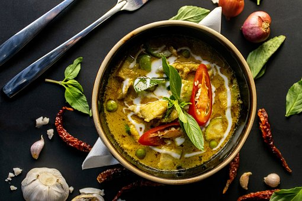

Thai Green Curry

Eating this will turn a bad day around
Make this easy Thai green curry recipe with chicken, canned coconut milk,
fresh herbs, and lime. You'll have a colorful dish that rivals your
favorite takeout chicken with green curry.
Ingredients:
- 450g SunRice steamed brown rice family pack
- 1 tablespoon Vegetable oil
- 350g Firm tofu, drained and diced
- 1 bunch Broccoli, cut into florets and sliced stems
- 1/2 cup Green curry paste
- 400g can Light coconut cream
- 1 tbsp Brown sugar
- 100g Sliced frozen green beans
- 1/2 cup Thai basil leaves, plus extra to garnish
- 1/4 cup Coarsely chopped peanuts (optional)
Steps:
-
Heat 2 teaspoons of the oil in a large non-stick frying pan, over a
medium/high heat. Add tofu and cook, turning occasionally for 5 minutes,
until golden brown. Remove from frying pan and set aside.
-
Add remaining oil to frying pan. Add broccoli and stir-fry for 3
minutes. Add green curry paste and cook stirring for 1 minute longer.
Add coconut cream and sugar and stir to combine. Simmer, 2 minutes until
sauce thickens, stirring occasionally. Add beans and tofu and stir for 1
minute or until vegetables are tender, then stir in basil.
-
To cook the rice, simply massage the pouch to separate the grains and
place in the microwave for the required time as indicated on the packet.
Set aside.
- Top curry with extra basil leaves and nuts. Serve with rice.